gridstatics / 00001
RMS 18.564 mm/s² ピーク 1.83 Hz

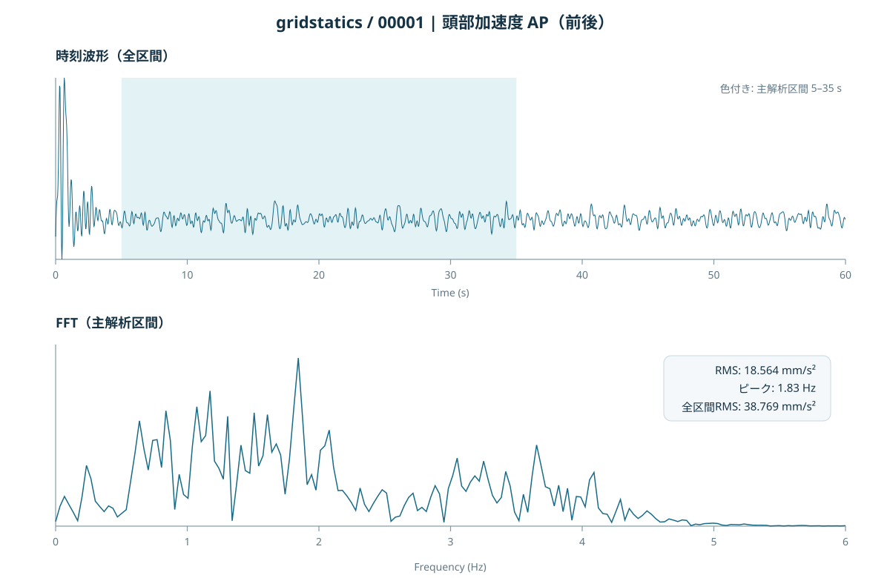
HEAD IMU ANALYSIS
13記録をAP方向だけに絞り、波形・FFT・RMSを条件別に整理しました。ML（左右）方向の図表と数値は含めていません。
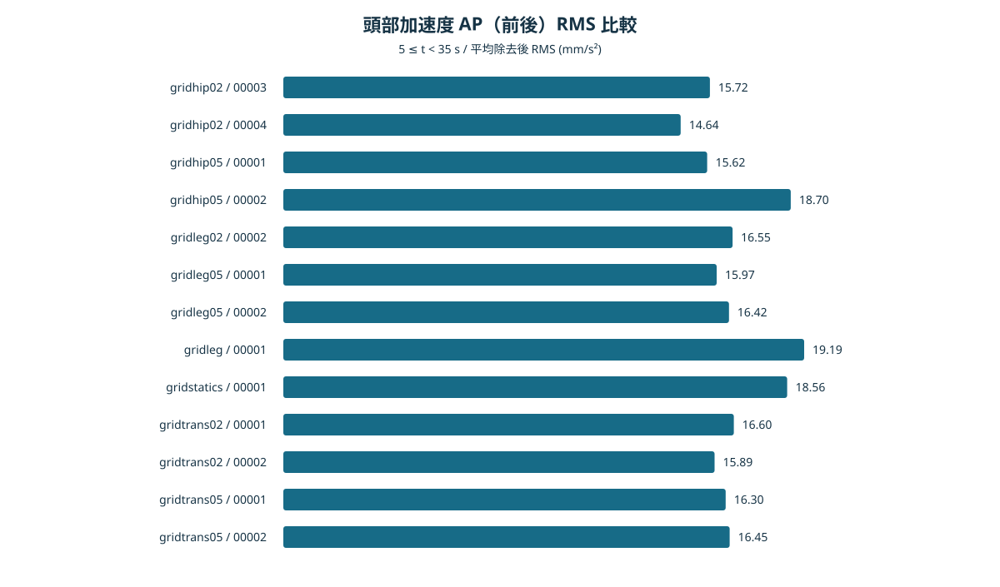
主解析区間: 5 ≤ t < 35 s / 100 Hz / 3000点。RMSは区間平均を除去して算出。FFTは平均除去後にHann窓を適用した片側振幅スペクトルです。
RMS 18.564 mm/s² ピーク 1.83 Hz

RMS 15.718 mm/s² ピーク 1.30 Hz
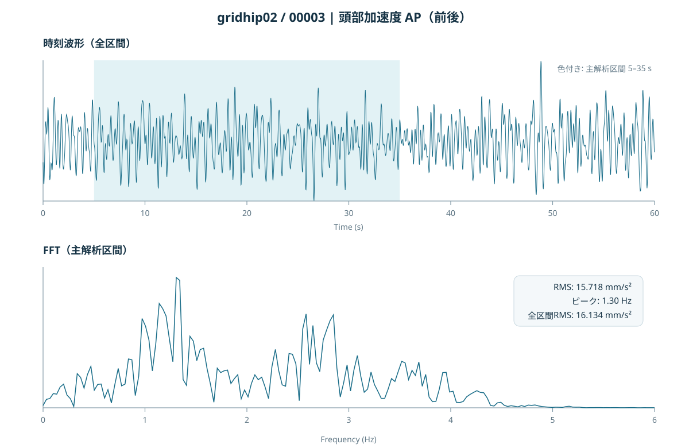
RMS 14.641 mm/s² ピーク 1.33 Hz
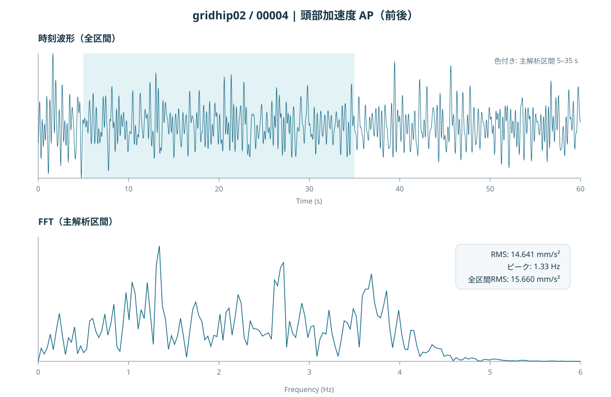
RMS 15.616 mm/s² ピーク 2.67 Hz
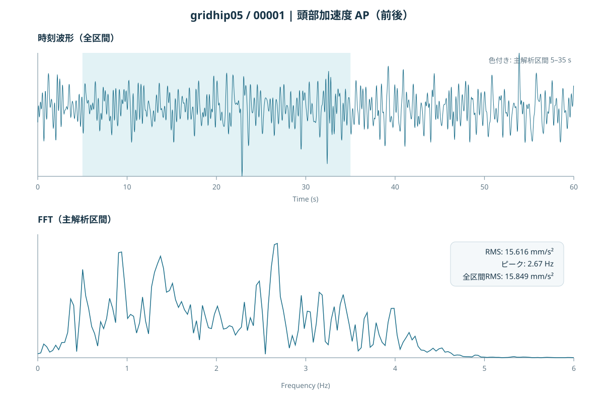
RMS 18.696 mm/s² ピーク 1.40 Hz
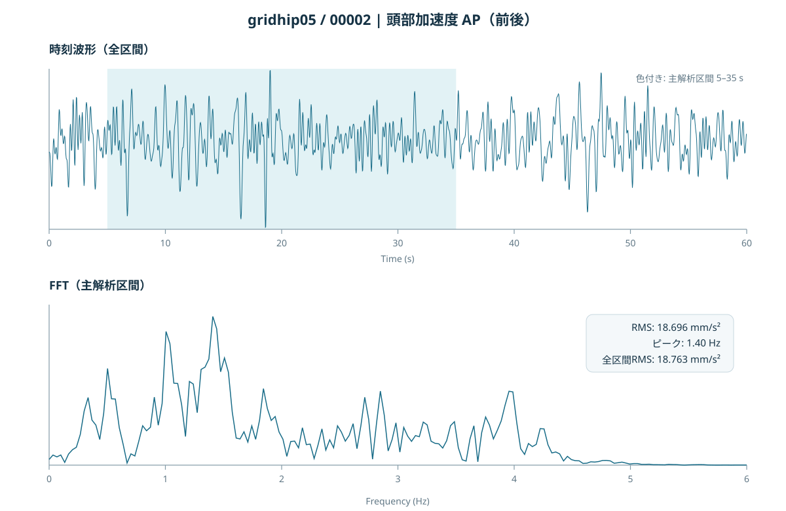
RMS 16.553 mm/s² ピーク 1.00 Hz
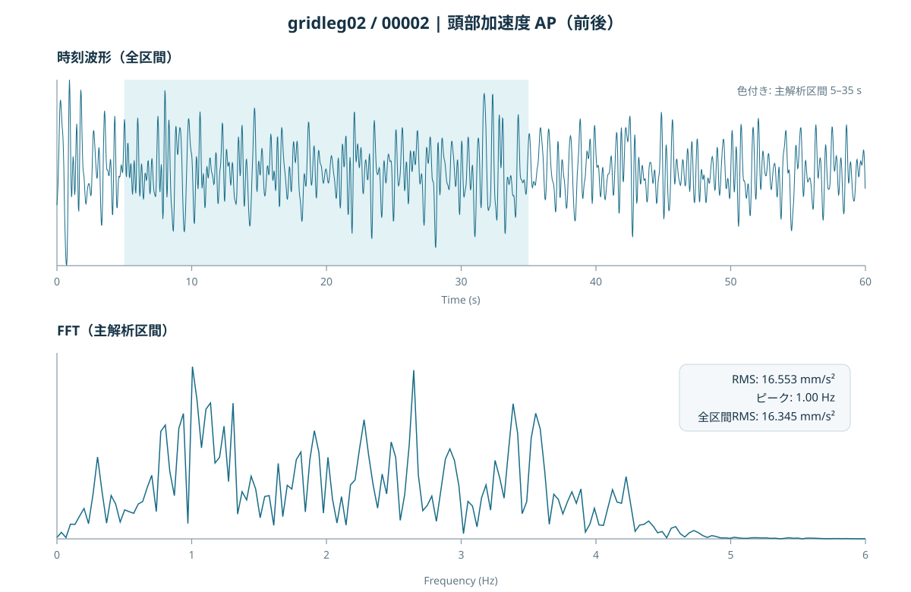
RMS 15.966 mm/s² ピーク 3.43 Hz
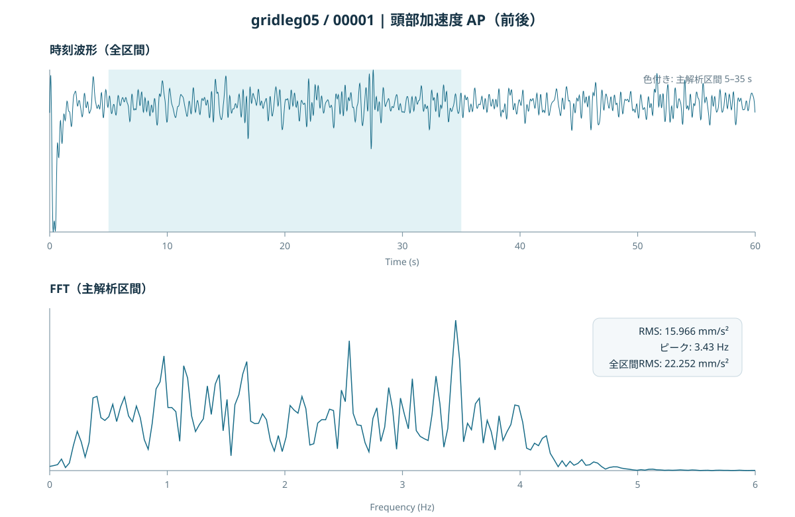
RMS 16.420 mm/s² ピーク 1.27 Hz
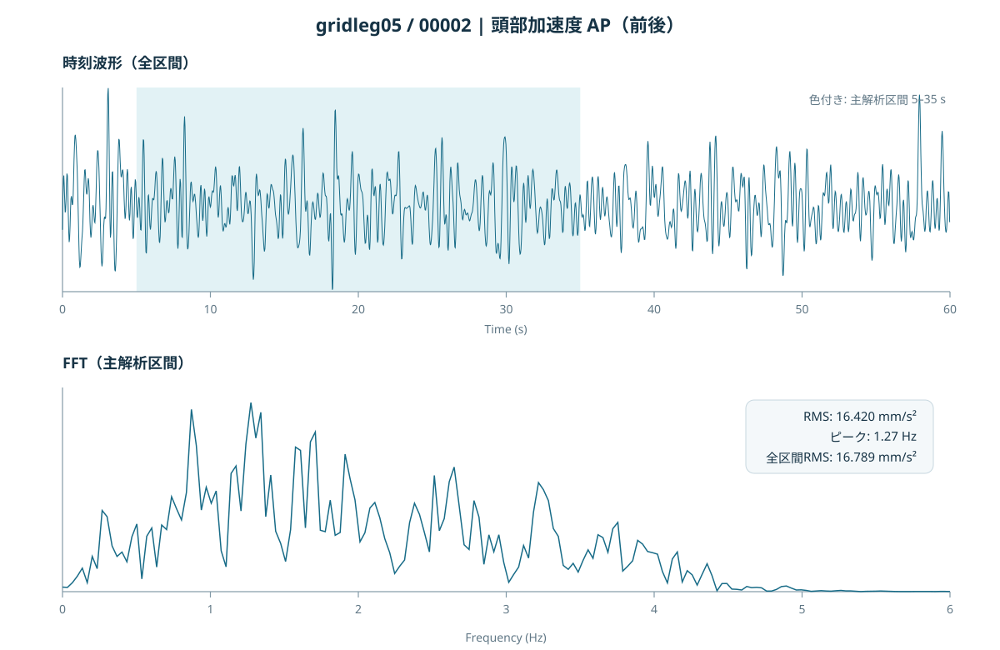
RMS 19.190 mm/s² ピーク 2.47 Hz
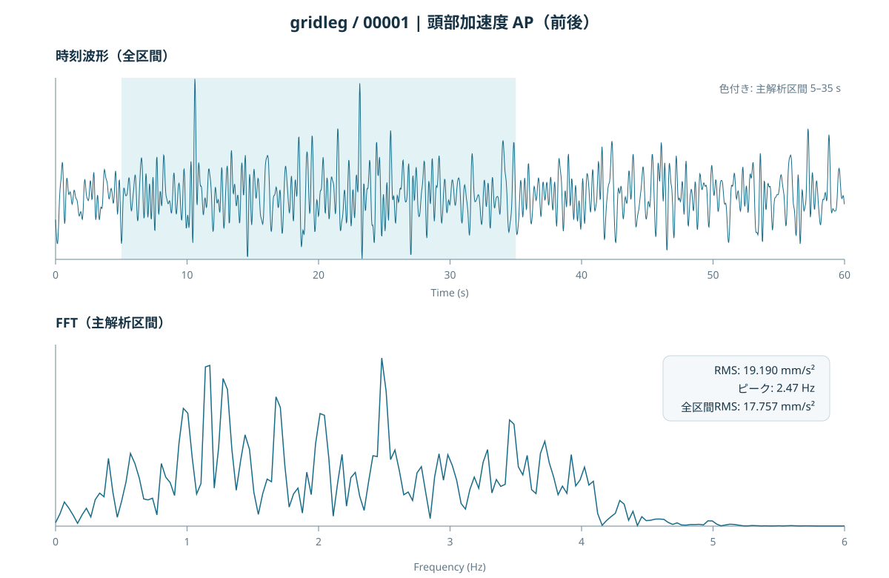
RMS 16.599 mm/s² ピーク 1.33 Hz
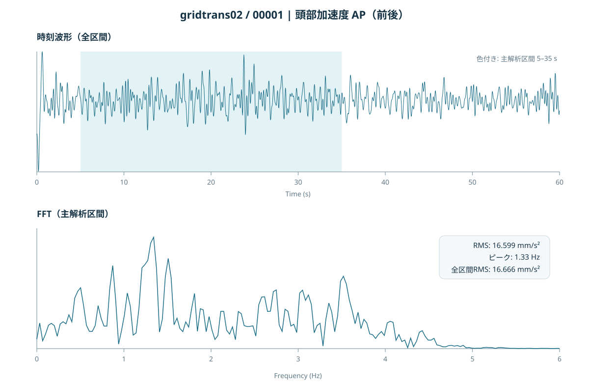
RMS 15.889 mm/s² ピーク 1.47 Hz
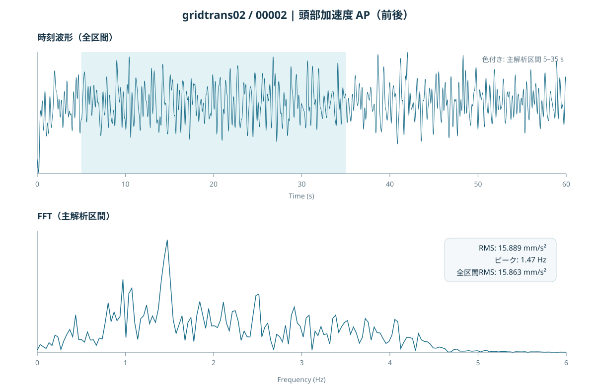
RMS 16.298 mm/s² ピーク 1.43 Hz
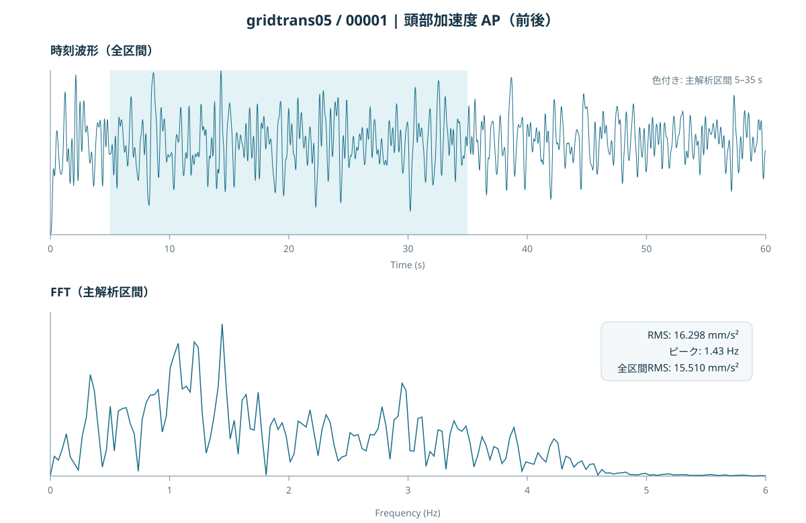
RMS 16.446 mm/s² ピーク 1.57 Hz
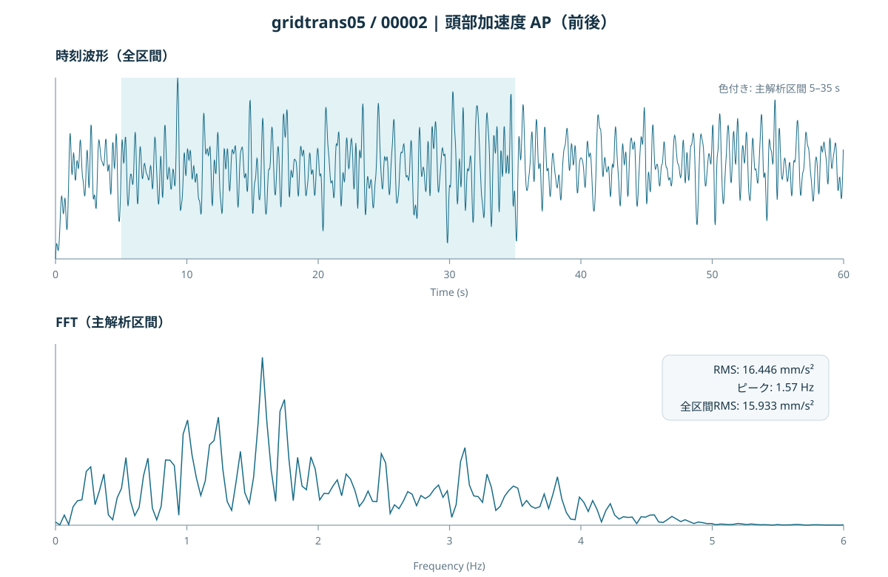